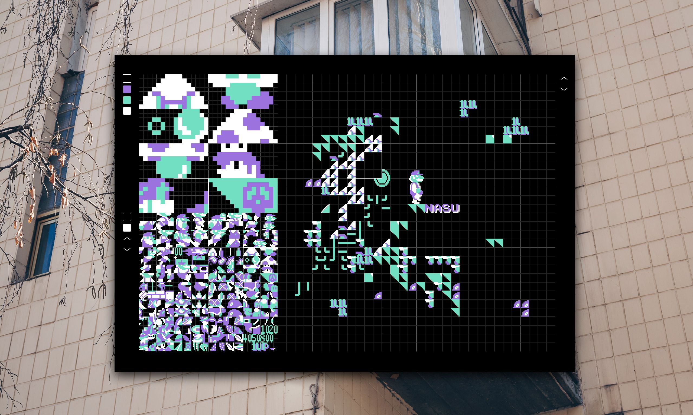

nasu
introduction
Nasu is a spritesheet and nametable editor created to help us design and assemble the assets of our famicon games. It can import and export both .chr spritesheets and .asm nametables. If you wish to learn more about creating 8bit projects, see our Assembly Guide.
nasubit

Meet Nasubit, the mascot for Nasu. Nasubit is there to talk about updates relating to Nasu.
sprite editor
The viewport is divided into 3 regions, the sprite editor, the tile selector and the nametable editor. The Sprite Editor allows you to see 16 tiles at once, and paint sprites in 4 colors. You can navigate the sprite editor with the w, a, s & d keys.
tile editor
The Tile Editor shows you 512 sprites, or 256 sprites per page. To toggle between the two pages in memory, use the tab key, and to move the selected tile, use the arrow keys.
nametable editor
The Nametable Editor shows you the full 32x30 available nametable. Select a sprite in the Tile Editor and click on the nametable editor to paint it.
download
community
If you don't wish to download the build(60mb), we recommend that you instead download the source files(100kb) and use the application directly into your web browser. If you have access to a reliable internet connection, you can use Nasu in your browser. If you find a bug or would like to suggest an improvement, open an issue.